RBEEB
Elution Bottle Empty, or Elution Buffer not enough liquid detected.
In Figure 1 below, the two longest C-LLD curves graphed, indicates the pipettor reached end of travel - zmax, index calue reached almost 200 - without detecting a large enough state change (insufficient y-value change).
If pipettor reaches zmax without successful trigger on state change, means no liquid is detected.
Resolution:
-
Verify elution track bucket makes good contact with grounding brush on panther side.
-
Inspect bucket metal coating for wear.
-
Inspect brush.
-
Attempt to replicate using clld in ssw (if reproducible, clean diti/contacts and repeat).
-
Otherwise pipettor replacement may be necessary.
-
Inspect teaching, pipettor skew and elution track to Panther alignment (see *.coo file group 18 or 19 depending on *.coo file executable - use reagent bay positions 56, 57, and 58 to compare to sample bays 62, 63, and 64, because elution track is single point.
- CooEdit = group 19
- Coordinate Editor = group 18
Ideally, we identify a minor mechanical adjustment to address these.
- Pipettor alignment
- Elution track alignment
- Elution track distance variance relative to ground plate
- Cable routing around the ground plate
- Pipettor type APP v BLDC
- Tip mfr + lot #
CASE 1
Capacitive Circuit is not well grounded.
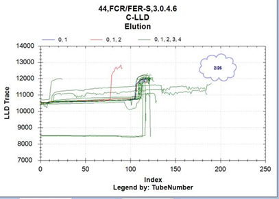
Figure 1. Capacitive sensor with poor grounding, leading to inconsistent level sense results. Most times liquid is detected around index = 120. Two traces where pipettor reaches index=190-200, pipettor end of travel (no liquid detected).
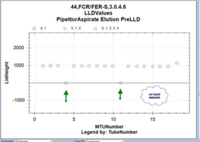
Figure 2. LLDHeight representation of level sense results from Figure 1. Notice most measurments are around 1000. And two results at 0. The very last measurement is higher could be bubble or new recon buffer pack.
CASE 2
Another, RBEEB but less common:
The Elution capacitive limit threshold of 800 is not met due to the gradual rise of the curve (see red box below). While it’s clear by eye liquid has been detected, the threshold algorithm is less sensitive as it needs to reject CASE 3.
This causes the LLD height to not be detected (height 0, RBEEB), and the tip deep dives into the pack.
This case is being investigated (as of 1/26/2022) to determine if threshold can be adjusted.
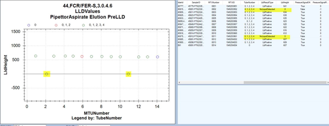
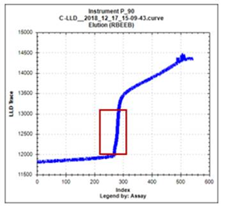
We have not seen any capacitive signal difference between Tecan and Biorear – in fact this curve first appeared using Tecan tips.
I do not know of any sure fix for this, other than playing around with the grounding of the elution dump truck, pipettor teaching, and opening up the elution pack completely.
Hopefully the FSEs are able to fix this type of curve by hardware intervention (elution dump truck, reagent pipettor, etc.).
CASE 3
The teaching is variance in x-axis appears larger than expected.
Reagent bay front to back is off by almost 6 steps in x-direction.
Sample bay front to back (roughly 2x distance of reagent bay), but difference in x-axis is only 2 steps.
7839, 14011, 2663, 0; // Pos 56 - regent bay lane 2 - back
7845, 16068, 2658, 0; // Pos 57 – reagent bay lane 2 - front
9035, 16068, 2661, 0; // Pos 58 – reagent bay lane 4 - front
12478, 11702, 660, 0; // Pos 59
12478, 15830, 660, 0; // Pos 60
13764, 15830, 660, 0; // Pos 61
11961, 15749, 70, 0; // Pos 62 – sample bay cover teach 1
14260, 15757, 66, 0; // Pos 63 – sample bay cover teach 2
14262, 11434, 81, 0; // Pos 64 – sample bay cover – teach 3
Please order a set of x-axis belts long, x-axis motor.
I don’t think the reagent pipettor is square up correctly and causing these edge effects on pipettor centering and poor centering.
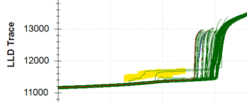
CASE 4
CASE NOTES:
2021-07-07 08:12:14 by Kelley Mitchell
Ann/customer left a VM stating elution A is lower than expected. She said the test count starts with 500 tests in cartridge and is now reading 0. She said this also happened on 6/30. Logs uploaded and show SARS PCR WL 0706-09 reagent cartridge LN 279032 2 RBEE at end of run. I will call Ann back after reviewing logs further.
Logs show:
07/06/2021 11:07:23 PM Message 262.000.00058 Not enough liquid detected for Elution A.
07/06/2021 11:07:23 PM Warning 262.002.00007 Liquid level detected in reagent 'Elution A' is lower than expected. Test counts have been adjusted to match the
volume of the reagent.
SARS PCR WL 0706-09 reagent cartridge LN 279032 2 RBEE at end of run
Case 00879786 (Pipettor Reagent RBEE flags) opened 6/30 and customer replaced elution pack.
Samples invalidated with RBEEB flags
RBEEB - Elution Reagent Bottle Empty
7/6 elution LLD curves were graphed.
Level sense dips all the way to zero/empty. According to the cLLD curve for elution buffer. There is a strange very high spike for LLD trace and this drives the pipettor to zero.
FSEs and TSEs were consulted as this may be an issue between Panther side reagent pipettor and the elution buffer packs/elution transfer mechanism.
Note: I graphed the 6/29 occurrence (see Case 00879786). I see same thing happening with the elution buffer LLD and cLLd trace
Querro tips are being used: LN H20201016
Other reagent clld traces (TMA assay) look ideal.
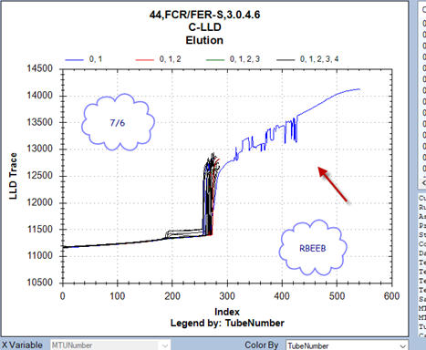
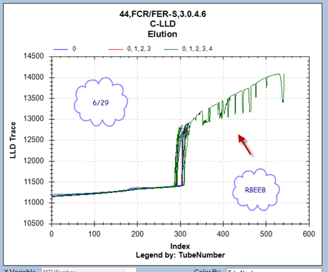
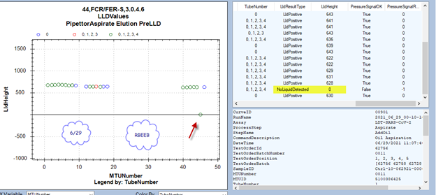
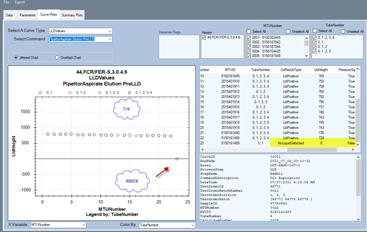
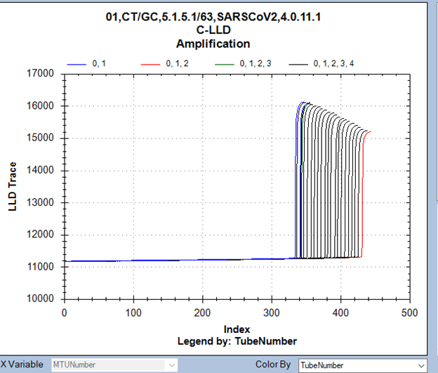
The taught position also found slightly biased left. See pair of images below.
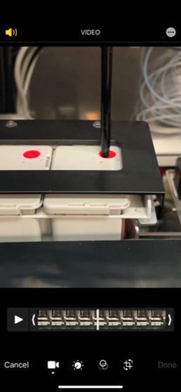
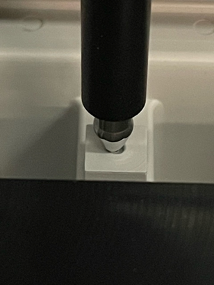
Centered pipettor position: may need to be biased manually.
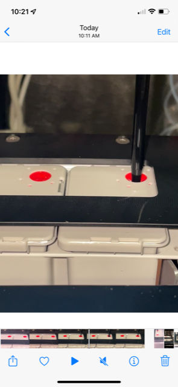
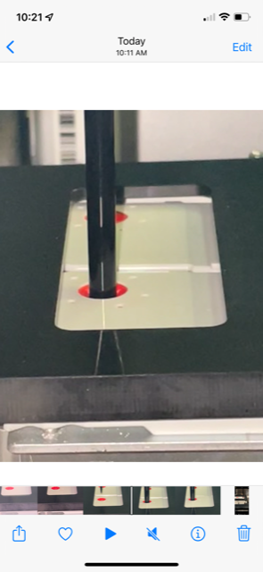
 button at the top of the page to send feedback, comments, or change requests.
button at the top of the page to send feedback, comments, or change requests.